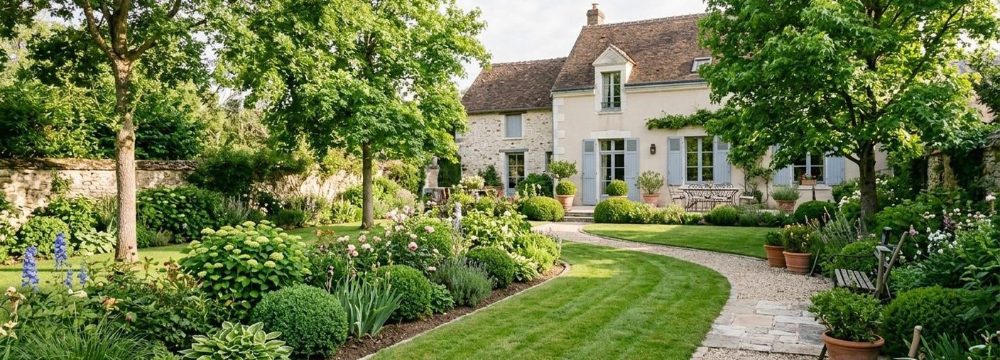
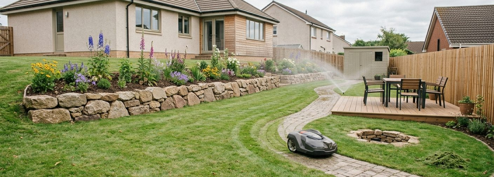
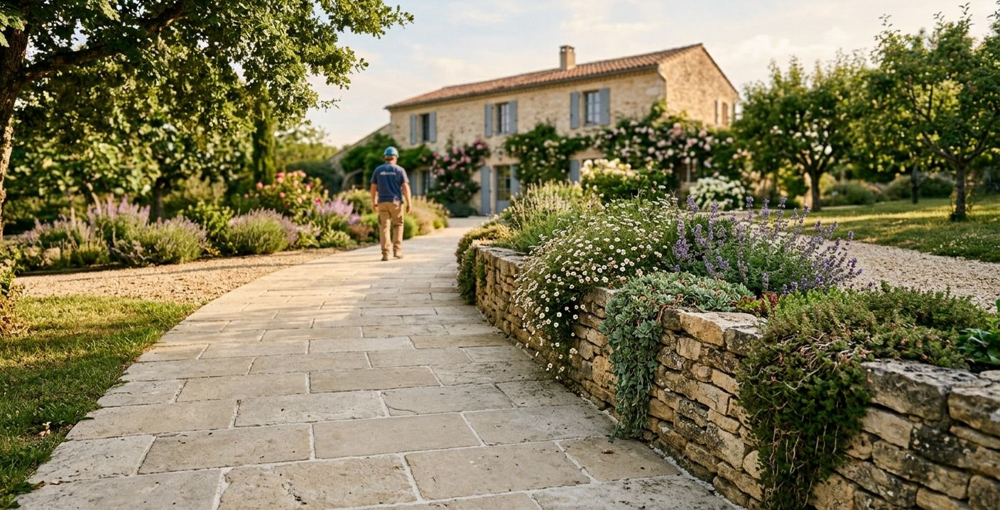
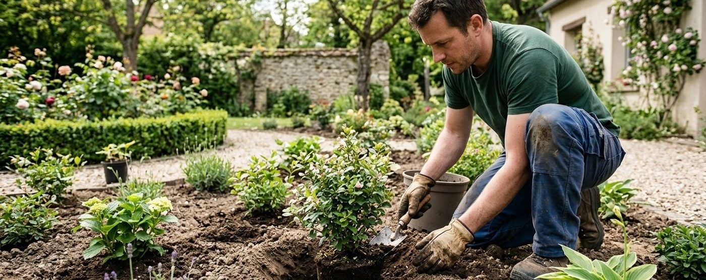
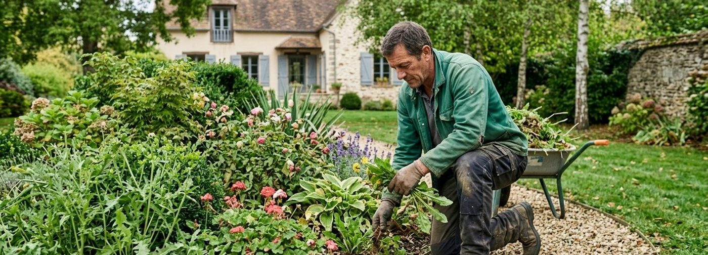
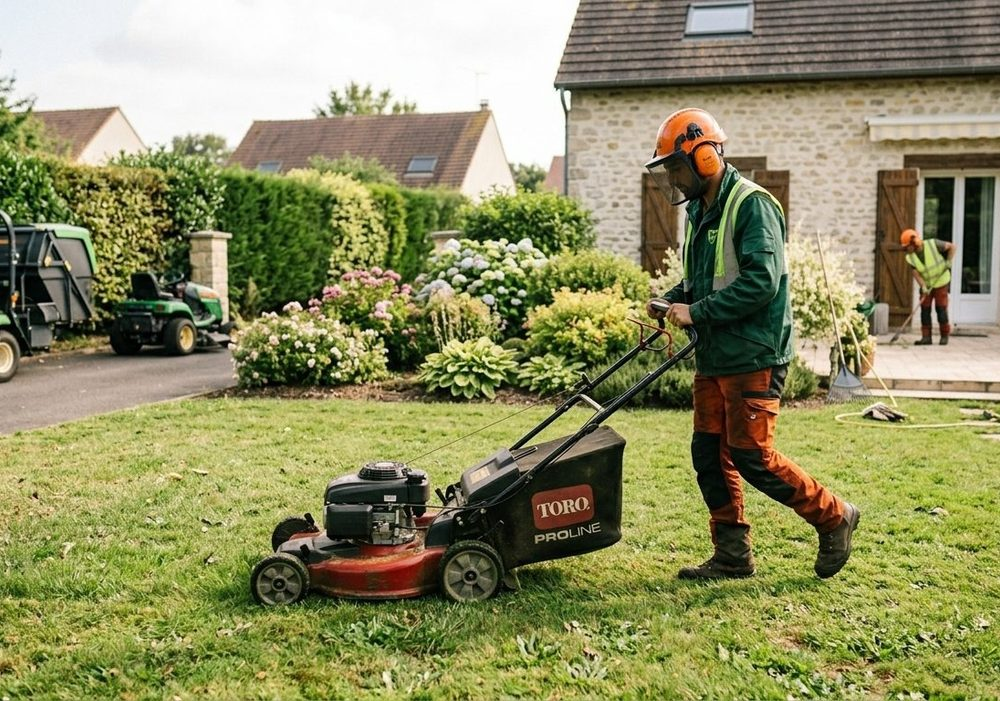
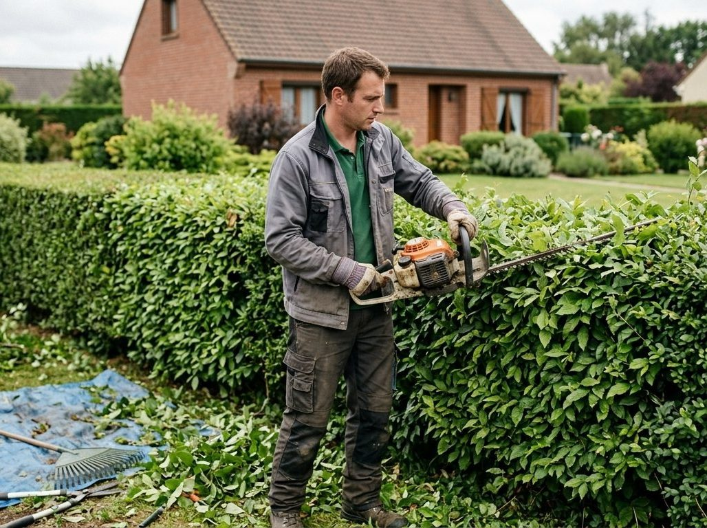
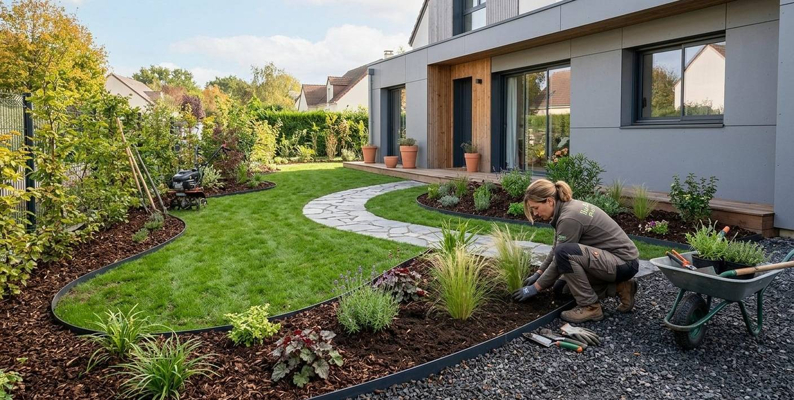
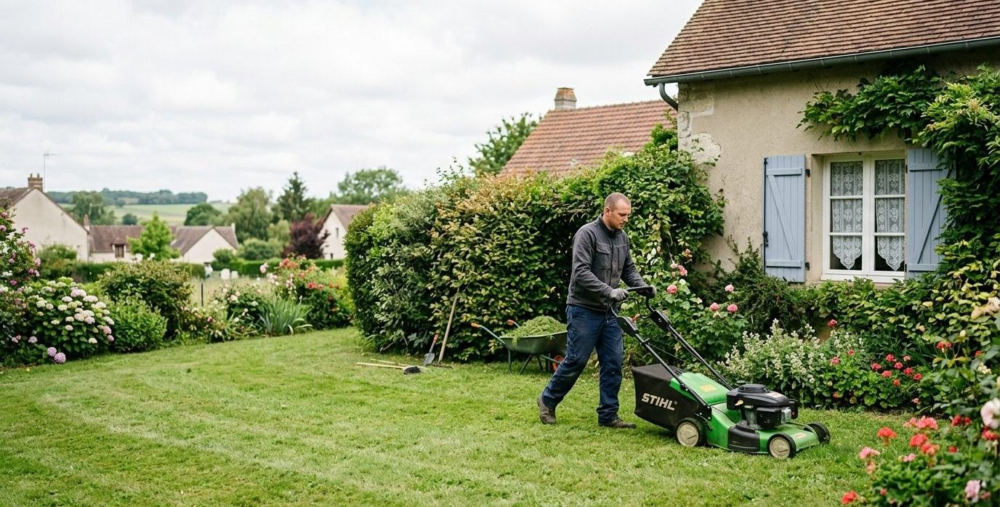

Préparation du terrain
Nivellement et reprise du sol avant les travaux.
Nos prestations
Quatre savoir-faire pour votre jardin et vos espaces verts, à Saclas.



Création
Création ou réaménagement d'un jardin : massifs, pelouse, allées et plantations, selon vos envies et votre terrain.
Nivellement et reprise du sol avant les travaux.

Arbustes, vivaces et massifs pour structurer et fleurir le jardin.
Entretien
Un jardin demande des soins réguliers pour rester agréable.



Image d'illustration.
Taille de haies
Une taille régulière garde les haies denses et bien dessinées.


Plantations
Arbustes, vivaces, massifs et pelouse pour structurer le jardin.
Dites-nous ce dont vous avez besoin : création, entretien ou plantations.
Aménagement paysager à Saclas (91).
© O.B.O Paysages Créations Services · Maquette de démonstration